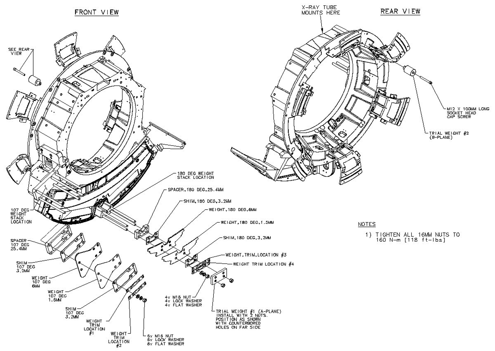

Operating Documentation
Direction 5307452-8EN, Rev# 4
Discovery CT750 HD Service Methods - Adv
Operating Documentation |
| Required Persons | Preliminary Reqs | Procedure | Finalization |
|---|---|---|---|
| 1 | Timing Not Applicable | 1 - 2 | 0.5 hour |
This procedure should be performed whenever the rotating Gantry is serviced. It is intended to 1) check or create sensitivity matrix, and 2) balance the Gantry in both static and dynamic vectors.
| Last Revised: | October 13, 2008 |
| Item | Qty | Effectivity | Part# | Manufacturer | |
|---|---|---|---|---|---|
| Torque wrench kit (Must order from the tool depot. The field torque kit does not have the capacity required for the balance weight fasteners.) | 1 | - | 46-268445G1 or equivilent | - | |
| Deep-well socket ½" drive | 1 | - | Part of Balance Kit shipped with system | - | |
| Gantry balance kit | 1 | - | Shipped with system | - | |
| 1/2” drive torque wrench | 1 | - | 46-268521G1 or equivalent | - | |
| IMPACT HAZARD. | |
| FAILURE TO TORQUE TRIM WEIGHT FASTENING HARDWARE WILL RESULT IN DAMAGING PROJECTILE EVENTS THAT WILL RESULT IN SEVERE EQUIPMENT DAMAGE AND POSSIBLE PERSONAL INJURY. | |
| Torque all fasteners to proper levels. |
| “Stacking Order” of balance weights is critical. | |
Review the information in the Safety section above.
Illustration 1: Balance weight stacking order

The order from back to front of the specific balance weights is shown in Illustration 1. Location angle 107 is shown (on the side of the detector), but also applies to the 180-degree location above the detector. Mandatory Weight Stack Positioning Order is shown:
The balance program will determine the number of each specific weight.
The physical order from front to back is critical and cannot be altered.
A quantity of 0 (zero) is a valid number for specific weights.
Each specific weight is defined by its base metal, generic name, location angle and thickness in mm.
Example:
Base Metal: Aluminum
Generic Name: SPACER
Location Angle: 107 DEG
Thickness in mm: 25.4MM
| NOTE: | You may not have all plate types installed on your Gantry depending on what is needed to balance the Gantry. |
Position the Table at its lowest position.
Remove the gantry right side cover.
Disable Axial Drive, HVDC, and 120 VAC service switches from the service switch panel.
Remove the Gantry left side, top, and front covers.
Refer to Parts Replacement → Gantry → Enclosure → (Cover Removal Procedures).
On the gantry right side, connect the front and rear cover cables containing the E-Stop circuit to the terminators on the gantry frame. Only one cable from the front and rear will connect, there is no chance to choose wrong.
| CRUSH HAZARD | |
| UNEXPECTED GANTRY ROTATION CAN CAUSE SERIOUS INJURY. | |
| Always disable axial drive before touching rotating assembly. Keep away from rotating assembly with axial drive enabled |
Enable the 120 VAC, HVDC and Axial Drive service switches from the service switch panel in order to run the balance test.
Launch the Service Gantry Balance program from the Service Desktop, Calibration tab.
Illustration 2: Sample Gantry Balance GUI

Select [Run] to start the Gantry balance procedure.
| NOTE: | Follow the on-screen instructions exactly as stated. Failure to follow the steps may result in having to start the procedure from the beginning. |
The program will require extra steps if the sensitivity matrix does not exist.
If the sensitivity matrix does not exist, the program will ask you to enter the current weight configuration prior to performing the steps to generate a new sensitivity matrix.
The balance program will then ask for installation of the trial weights which will require removal of the rear cover.
See Illustration 5 for example of entries for 107° weight stack. The 180° weight stack appears in the same manner.
| NOTE: | There is a weight diagram available via the [Weight Diagram] button in the GUI. See Illustration 3. The diagram shown on the product supersedes any listing in this procedure. Pay close attention to the 180° 25.4mm spacer and 3.2mm shim orientation. The holes are shifted to one side and should be installed with the holes closest to the edge on the bottom near the DAS. Newer systems have a secondary safety bar through the middle of the weights not shown in the example here. |
Illustration 3: Sample Weight Diagram

Refer to Illustration 4 for trial weight placement during sensitivity matrix generation process. The trial weight on the 180 stack is placed on the end of all existing weights. Do NOT remove weights before adding the trial weight.
Illustration 4: Trial Weight A and B Mounting Locations

The program will ask you to place each of the two trial weights one at a time during the process.
Trial weight A at 180° position must be installed over the top of the existing weight stack and nuts such that existing nuts are in recessed holes of trial weight. Install trial weight as shown in the Weight Diagram on the system. This is the configuration and weight components expected by the program.
Illustration 5: Request for Existing Weight Configuration

| NOTE: | The order of the balance weights as installed on the Gantry is very important. An entry of zero is valid if the particular weight type is not currently installed. |
The program will prompt for the number of specific weights in 107- and 180-degree locations. The order is labeled as "inner to outer" with inner referring to weights closest to the Gantry (rear) and outer as towards the table (front).
Follow the steps as stated in the “Result” portion of the GUI screen as you proceed through the Gantry Balance procedure. Those steps will not be included here as they may change from release to release of the product.
See Table 1 for example questions and messages that may come up depending on system status and answers to other questions during program execution. Message wording may not be exactly the same as shown below.
Table 1: Gantry Balancing - Example Questions/Messages
| Question/Message | Notes |
| Balance verification is skipped because a sensitivity matrix data file does not exist. | Per message, the program recognizes that it must first generate a sensitivity matrix prior to balance and will step you through the process. |
| Has gantry configuration been changed since last balanced? | If you select [Yes] , the program will ask you to verify installed weights prior to running balance verification. If [No] , then the program proceeds to balance verification. |
| The gantry is balanced to Factory Specifications. Do you want to improve gantry balance? | You can run another iteration if desired. The Gantry is balanced very well at this point, so no further action is necessary. This is primarily for factory needs. |
| The gantry is balanced to Field Specifications. Do you want to improve gantry balance? | You can run another iteration if desired. The Gantry is balanced, but if results are close to the field specification boundary, then later the system may not allow Detailed Cal to run if the balance check run by the cals varies out of field specification at that time. |
| The gantry is not balanced. Do you want to retry? | Need to continue with another iteration. After 3 iterations, if the Gantry is not balanced, then other system problems or errors in entries are causing the program to fail to converge on a balance weight configuration. Some possible causes/remedies: Verify proper entry of weight stack information; check covers on Gantry sensors; then if there is still a problem, there may be a corrupted sensitivity matrix and you may need to regenerate, which the system will walk you through. |
| Click Save to update new weight configuration and exit. Click No Save only to exit. | Unless there is a problem, click [Save] to store results and finish Gantry balance. |
When the Gantry balance procedure indicates a passing result, save the updated configuration information and exit the program.
| IMPACT HAZARD. | |
| FAILURE TO TORQUE TRIM WEIGHT FASTENING HARDWARE WILL RESULT IN DAMAGING PROJECTILE EVENTS THAT WILL RESULT IN SEVERE EQUIPMENT DAMAGE AND POSSIBLE PERSONAL INJURY. | |
| Torque all fasteners to proper levels. |
Make sure to torque all fasteners as instructed. Use the torque wrench ordered from the tool depot to tighten the nuts on the threaded rods using the following process. This torque wrench is a 1/2” drive necessary for the deep-well socket and is capable of 250 lb-ft (339 N-m, 3,457Kg-cm)
First tighten all nuts to 50% of the full torque value, which is shown in Table 2. This will insure all nuts are all uniformly tight prior to applying final torque.
Table 2: Initial Torque Value
| 59 lb-ft. | 80 N-m | 816 kg-cm |
After all bolts are torqued to the initial value, torque all to the final torque value shown in Table 3:
Table 3: Final Torque Value
| 118 lb-ft. | 160 N-m | 1632 kg-cm |
Be aware that adjacent nuts might loosen when a nut is tightened due to the springiness of the stack. Use a diagonal type pattern (similar to tightening tire lug nuts) to tighten the nuts and go back to verify all are still torqued properly when complete. Refer to Gantry Service Balance Theory for further discussion regarding the importance of torque on the weights.
Disable the Axial Drive, HVDC and 120 VAC service switches from the service switch panel.
Install the front cover (and rear if removed), top covers and left side cover.
Enable the 120 VAC, HVDC and Axial Drive service switches from the service switch panel and install the gantry right side cover.
Remember to enable the table drives using the push button on the bottom right of the service switch panel or using the front cover enable button.
Perform FASTCAL. Ensure no pop-up windows occur and gesyslog is error free.